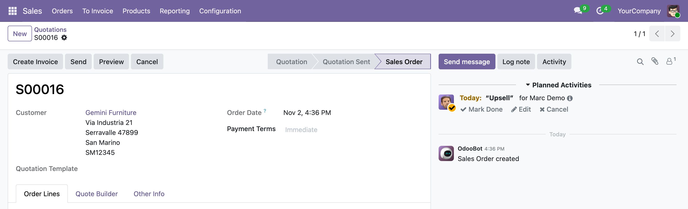
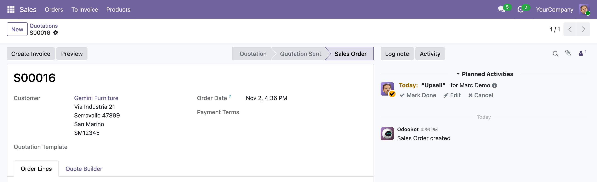
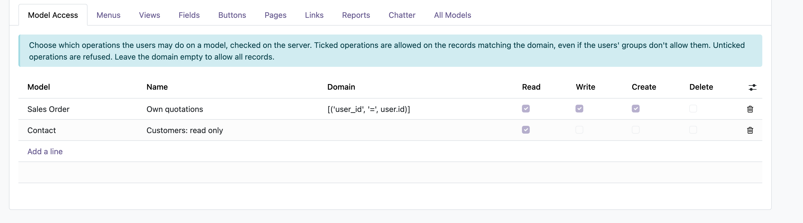
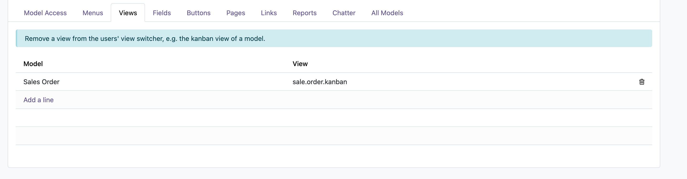
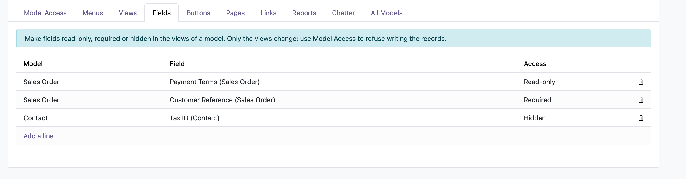
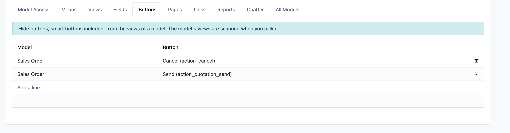
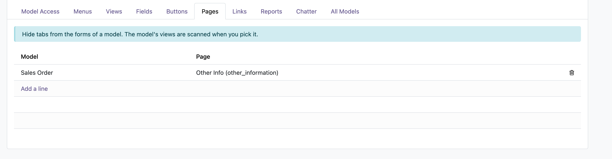
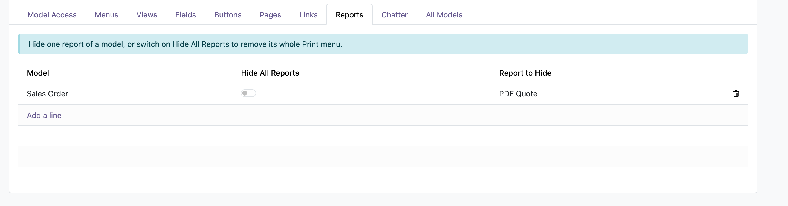
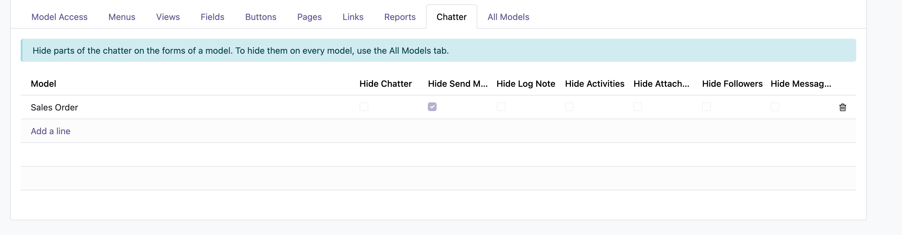
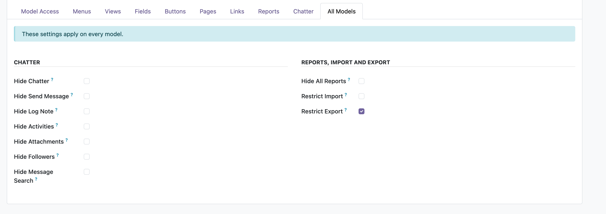

Leofren Technologies · Access Control
Easy Access Rules lets you decide, per user and company, which operations users may do on each model — checked on the server — and which menus, views, fields, buttons, tabs, reports and chatter parts they see. All from one screen, without writing code.
The same quotation, opened by the administrator and by a salesperson with a “Sales team” rule.


Each area is a tab on the rule. Use only the ones you need.
Good to know: hiding a field, button or menu changes what users see. To stop them from reading or changing records — including through imports, exports or the API — use Model Access, which Odoo checks on the server.
Pick a tab to see it in Odoo — every screenshot is the real module.

Tick Read, Write, Create and Delete, and limit them with a domain such as the user's own records. Ticked operations are allowed even if the users' groups don't allow them; unticked ones are refused. Odoo checks it on the server, for imports, exports and the API too.

Take the kanban, list or any other view of a model away from the users. Actions open on the views that remain.

Model by model, in the form, list and kanban views. Hidden fields disappear from list columns too.

Pick a model and its views are scanned for you: choose the buttons from the list. The Links tab works the same way for clickable links, e.g. on dashboard cards.

Hide notebook pages such as Other Info, and apps in the Settings.

Hide one report of a model, or switch on Hide All Reports to remove its whole Print menu.

Send message, Log note, Activities, attachments, followers, message search, or the whole chatter.

Hide chatter parts and all reports everywhere, and restrict import and export on every model — refused on the server too.
No configuration files, no code.
Install Access Management from the Apps menu. The administrator can manage the rules straight away.
Other users who should manage rules need the Easy Access Rule / Administrator access right in Settings → Users.
Open Easy Access Rules, create a rule, pick its users and companies, fill in the tabs you need and save. It applies right away — no restart.
Yes — it works with both Odoo Enterprise (on-premise and Odoo.sh) and Community. Odoo Online (cloud) does not allow installing third-party apps, so this module can't be installed there.
Users with the Easy Access Rule / Administrator access right, set in Settings → Users. The administrator has it by default. Other users can't see or change the rules.
It changes the screens only. To refuse reading, changing, creating or deleting records, add a Model Access line: Odoo checks it on the server, for the web client, imports, exports and the API alike.
Everything any of their rules hides stays hidden. For Model Access, an operation is allowed when one of the user's lines for that model allows it, on the records matching its domain.
A rule applies while its users work in one of the rule's companies, also when several companies are selected in the company switcher. Leave Companies empty to apply it in every company.
Almost. Users, groups, companies and Odoo's technical models can't get Model Access lines, so a rule can never lock users out of logging in or let them raise their own rights.
Yes, archive it. An archived rule restricts nobody until you restore it.
Yes, get in touch and we'll scope a customization for your use case.
Easy Access Rules is free to install. Reach out any time and we'll help you set up your rules.
contact@leofren.com